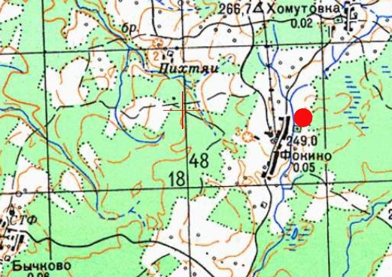
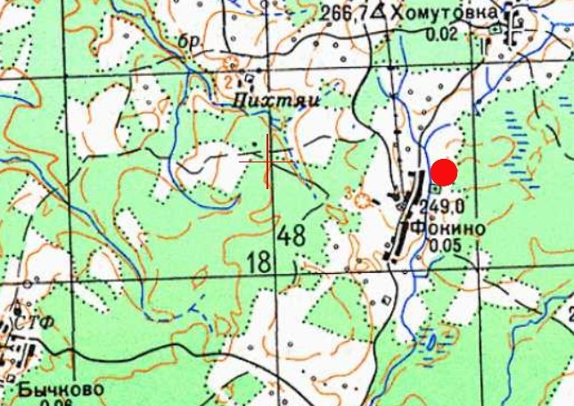

Информация № 52: Магіла Селязнёва П.П.
1. Месца і дата пахавання: Рэспубліка Беларусь, Віцебская вобл., Віцебскі раён, Вымнянскі с/с, в. Фокіна.
2. Тып пахавання: магіла ахвяры вайны
3. Памеры пахавання: Шырыня – 3 м, даўжыня – 5 м
4. Кароткае апісанне пахавання: На магіле ўсталяваны металічны крыж з шыльдачкай
5. Колькасць пахаваных: 1
6. Персанальныя звесткі: Селезнев Потап Петрович
7. Дадатковая інфармацыя: На магіле ўсталяваны металічны крыж з шыльдачкая, на якой размешчаны надпіс: «Селезнев Потап Петрович родился в 1926 убит 23/I 1943 года красынскай полицией». Звесткі прадстаўлены Марозавым В.М.
Информация № 53: Магіла Селязнёва О.П.
1. Месца і дата пахавання: Рэспубліка Беларусь, Віцебская вобл., Віцебскі раён, Вымнянскі с/с, в. Фокіна.
2. Тып пахавання: магіла ахвяры вайны
3. Памеры пахавання: Шырыня – 3 м, даўжыня – 5 м
4. Кароткае апісанне пахавання: На магіле ўсталяваны металічны крыж з шыльдачкая, на якой размешчаны надпіс: «Селезнев Осип Павлович убит немцами в 11 лет».
5. Колькасць пахаваных: 1
6. Персанальныя звесткі: Селезнев Осип Павлович
7. Дадатковая інфармацыя: Звесткі прадстаўлены Марозавым В.М.
 

Информация № 54: Магіла сям’і Котавых
1. Месца і дата пахавання: Рэспубліка Беларусь, Віцебская вобл., Віцебскі раён, Вымнянскі с/с, в. Котава.
2. Тып пахавання: Брацкая магіла ахвяр вайны
3. Памеры пахавання: Шырыня – 4 м, даўжыня – 7 м
4. Кароткае апісанне пахавання: На грамадзянскіх могілках. На помніку надпіс “Королев Даниил, Мария, Домна, Шура, Тася. Погибли в 1943 г”.
5. Колькасць пахаваных: 5
6. Персанальныя звесткі: Котов Даниил, Мария, Домна, Шура, Тася
7. Дадатковая інфармацыя: Королев Данила Сергеевич 1887 к-з Рассв. Победителя» (д. Пихтяи) № 294 в списке погибших по Котовскому с/с (ГАВО, ф.256 оп.1 д.1 л.92)